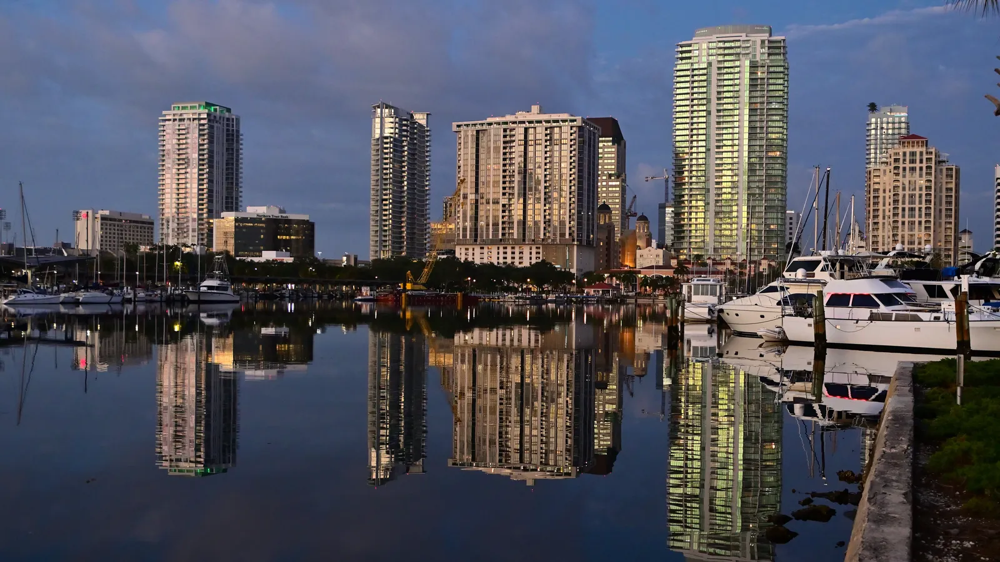

St. Petersburg homes for sale include 1920s bungalows in historic neighborhoods, downtown condos and waterfront houses on the bay. It's a popular city with a walkable downtown, but it was hit hard by the 2024 hurricanes, and flood risk varies a lot from one neighborhood to the next. Rui Cunha's office is in Deerfield Beach, and he works with buyers across Florida, including St. Pete.
What it's like to live in St. Petersburg
St. Petersburg sits on the Pinellas peninsula, with Tampa Bay on one side and the barrier-island beach towns on the Gulf side. Florida's Office of Economic and Demographic Research estimated its population at 265,803 as of April 2025 (Florida EDR). Downtown has gone through a big revival over the past decade, with the St. Pete Pier, museums and restaurants within walking distance (Landing, 2023). Tampa is across the bay.
Neighborhoods and communities
A 2023 neighborhood guide highlights these areas (Landing):
- Historic Old Northeast. St. Pete's first organized neighborhood, at the northeast edge of downtown, with tree-lined streets and bungalows.
- Historic Kenwood. One of the largest concentrations of 1920s Craftsman bungalows in the area.
- Snell Isle. A waterfront neighborhood on the bay, close to downtown.
- Crescent Lake and Historic Uptown. Walkable, tree-lined areas north of downtown.
- Old Southeast and Coquina Key. Neighborhoods near the water on the city's south side.
Being near the water is part of St. Pete's appeal, and it's also the main risk. See the flood notes below before you fall in love with a street.
St. Petersburg market snapshot
According to Momentum Research, computed from MLS records, St. Petersburg's median closed price was about $385,000 in September 2026, up about 5.5% from a year earlier, with homes taking about 44 days to sell (Momentum).
That figure mixes downtown condos, inland houses and waterfront homes. A bungalow on high ground and a house on a bayfront isle can have similar prices but very different insurance costs. Ask Rui for a current comparison of recent sales for what you're actually considering.
Practical notes: the 2024 storms, flood zones and insurance
What happened in 2024. Hurricane Helene's storm surge in September 2024 set a record at the St. Petersburg tide station, which has data going back to 1947: 6.31 feet above the normal high-tide line, beating the old record of 3.97 feet from 1985 (NHC, Helene report). Two weeks later, Hurricane Milton dropped up to 20.40 inches of rain near St. Petersburg and tore the roof off Tropicana Field (NHC, Milton report). Some neighborhoods, such as Shore Acres, also flooded in 2023 during Hurricane Idalia, when more than 1,400 homes there took on water (Tampa Bay Times).
Flood zones vary block by block. A 2026 review of FEMA flood maps found that every sampled address in Shore Acres, Snell Isle and Riviera Bay was in a high-risk flood zone, while neighborhoods such as Allendale Terrace, Colonial Place and Jungle Terrace were entirely outside it (Momentum, October 2026). Lower-risk doesn't mean no risk, especially with heavy rain, but it changes insurance costs a lot.
The 49% rule. Under FEMA rules, a home in a high-risk flood zone with damage above 50% of its pre-storm value must be rebuilt to current code, which often means elevating it. St. Petersburg uses a slightly lower 49% threshold (St. Pete Catalyst, November 2024). If you're buying a storm-repaired home, ask what work was done, whether it was permitted and whether it triggered these rules.
Insurance. Florida's Office of Insurance Regulation puts the statewide average homeowners premium at about $3,736 a year, including wind, in the admitted market (Florida Realtors, September 2026). A low-lying waterfront home can cost far more to insure. Citizens policyholders must also carry flood insurance as that requirement phases in through 2027 (News4JAX). Get real quotes before you sign.
Condos. Buildings of three or more stories need milestone inspections (at 30 years, or 25 if the local building department requires it, then every 10 years — SB 154, 2023) and a Structural Integrity Reserve Study with funded reserves (Rimkus). Ask for the reserve study, budget, inspection reports and any storm-damage repair plans.
Homestead. If the home will be your primary residence, ask a CPA about Florida's homestead exemption. Second homes and non-residents don't qualify.
Schools
St. Petersburg is served by Pinellas County Schools. Use the district's tools to confirm the assigned schools for any address, and check school grades with the Florida Department of Education.
Getting around
Downtown St. Pete is walkable, but most of the city is car-dependent. Bridges connect it to Tampa, and traffic on them at rush hour can change your commute a lot, so test the route before you commit.
Working with Rui in St. Petersburg
Rui's office is in Deerfield Beach, and he helps clients across Florida. He has worked in Florida real estate since 2003, as a mortgage broker, a broker and a licensed General Contractor, which helps when you're judging a storm-repaired home or a condo building's repair plans. He can help you buy a home, look into an ITIN mortgage or buy as an international buyer. Use the mortgage calculator with taxes and insurance included, and compare with Tampa and Sarasota.
FAQ
What is the median home price in St. Petersburg, FL?
According to Momentum Research, the median closed price was about $385,000 in September 2026, up about 5.5% from a year earlier. Waterfront homes and condos can be far above or below that, so compare recent sales for the area you want.
Which St. Petersburg neighborhoods flood?
A 2026 review of FEMA maps put every sampled address in Shore Acres, Snell Isle and Riviera Bay in a high-risk flood zone, while areas like Allendale Terrace, Colonial Place and Jungle Terrace were outside it. Always check the specific address, its elevation and its flood history.
What is the 49% rule in St. Petersburg?
If a home in a high-risk flood zone is damaged beyond 49% of its pre-storm value, St. Petersburg requires it to be rebuilt to current flood rules, which often means elevating it. FEMA's national threshold is 50%.
Can I buy in St. Petersburg without a Social Security number?
Many buyers use an ITIN mortgage, subject to lender approval. See our ITIN mortgage guide or contact Rui.
Talk to Rui
Looking at St. Pete? Ask Rui to check the flood zone and recent sales on the exact streets you like.